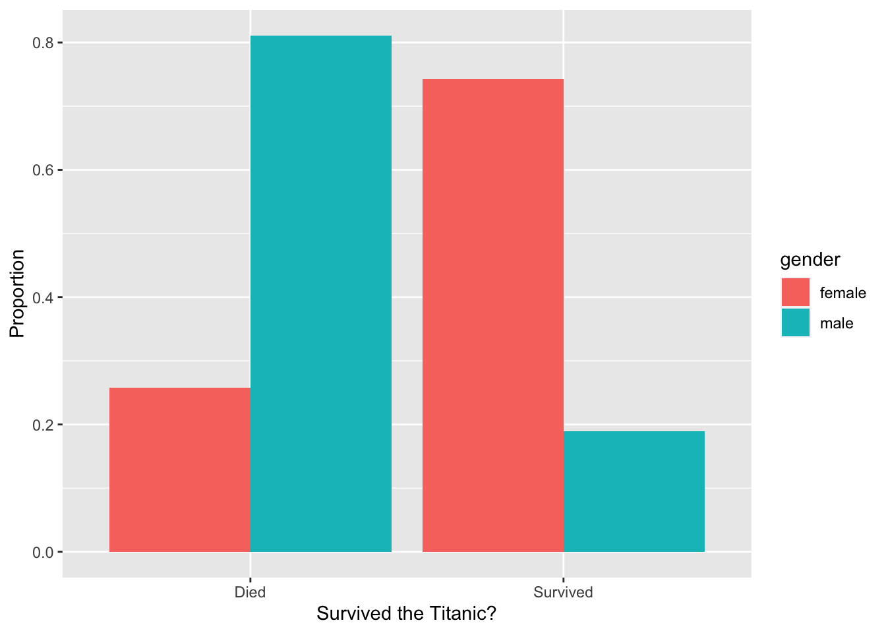
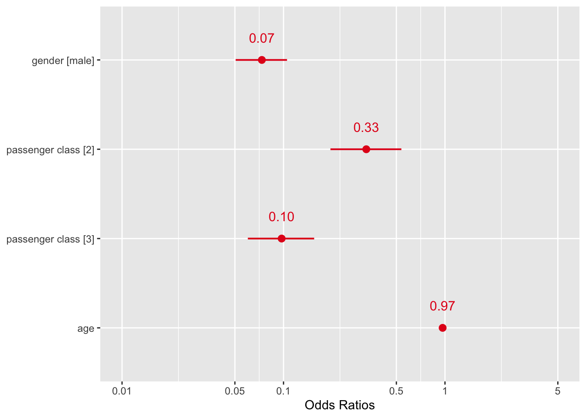

Data Analysis
Week 7 Further Tasks Solutions
This auditory illusion first appeared on the internet in May 2018. An explanation of why people hear different things can be found in this short video, just one of many internet sources discussing the phenomenon. The main reason behind the difference appears to be that as we age we lose the ability to hear certain sounds. To see if we could find evidence of such an age effect, we asked students and staff at the School of Mathematics and Statistics at the University of Glasgow to fill out a survey on what they hear. Below you can see summaries of the responses.
The proportions hearing Yanny and Laurel are very similar to each other, and there are some respondents who hear both or even something completely different. This may be because people do not listen to the audio file using the same device, something we couldn’t control for in the survey. Ignoring the responses other than Yanny or Laurel, we have 53 observations.
Download the data (yanny.csv) from Moodle and fit a logistic regression model with hear as the binary response variable, and age and gender as the explanatory variables. What are your findings?
Solution
yanny <- read_csv("yanny.csv")
yanny <- yanny %>%
select(hear, gender, age)
yanny$hear <- as.factor(yanny$hear)
yanny$gender <- as.factor(yanny$gender)ggplot(data = yanny, aes(x = hear, y = age, fill = hear)) +
geom_boxplot() +
labs(x = "What do you hear?", y = "Age") +
theme(legend.position = "none")
We see in the boxplot that the people who hear Yanny are, on average, younger, however there is some overlap in the IQR’s.
yanny %>%
tabyl(gender, hear) %>%
adorn_percentages() %>%
adorn_pct_formatting() %>%
adorn_ns() # To show original counts gender Laurel Yanny
Female 50.0% (14) 50.0% (14)
Male 56.0% (14) 44.0% (11)ggplot(data = yanny, aes(x = hear, group = gender)) +
geom_bar(aes(y = ..prop.., fill = gender), stat = "count", position = "dodge") +
labs(x = "What do you hear?", y = "Proportion")
There is a slightly smaller proportion of men hearing Yanny, but the proportions are very similar overall.
mod.yanny <- logistic_reg()
mod.yanny <- mod.yanny |>
fit(hear ~ age + gender, data = yanny) |>
extract_fit_engine()
mod.yanny %>%
summary()
Call:
stats::glm(formula = hear ~ age + gender, family = stats::binomial,
data = data)
Coefficients:
Estimate Std. Error z value Pr(>|z|)
(Intercept) 1.62792 1.24392 1.309 0.191
age -0.04839 0.03404 -1.422 0.155
genderMale -0.20637 0.56935 -0.362 0.717
(Dispersion parameter for binomial family taken to be 1)
Null deviance: 71.779 on 51 degrees of freedom
Residual deviance: 69.454 on 49 degrees of freedom
(1 observation deleted due to missingness)
AIC: 75.454
Number of Fisher Scoring iterations: 4mod.yanny <- logistic_reg()
mod.yanny <- mod.yanny |> fit(hear ~ age, data = yanny) |>
extract_fit_engine()
mod.yanny %>%
summary()
Call:
stats::glm(formula = hear ~ age, family = stats::binomial, data = data)
Coefficients:
Estimate Std. Error z value Pr(>|z|)
(Intercept) 1.51874 1.21032 1.255 0.21
age -0.04812 0.03423 -1.406 0.16
(Dispersion parameter for binomial family taken to be 1)
Null deviance: 71.779 on 51 degrees of freedom
Residual deviance: 69.586 on 50 degrees of freedom
(1 observation deleted due to missingness)
AIC: 73.586
Number of Fisher Scoring iterations: 4Notice that the coefficient of age is negative, suggesting that older people are less likely to hear Yanny. However, the coefficient of age is not significant (\(p\)-value of 0.16). Still, if we wanted to use the estimated coefficient to quantify the effect of age, we would need to look at exp(-0.04812) = 0.953. This suggests that for two people who differ by one year in age, the older person’s odds of hearing Yanny are 0.953 times those of the younger person. If we want to look at a ten-year age difference then the odds multiplier becomes exp(0.04812 * 10) = 1.618. Hence, for two people who differ by 10 years in age, the older person’s odds of hearing Yanny are 1.618 times those of the younger person.
plot_model(mod.yanny, show.values = TRUE,
title = "Odds (Age)", show.p = TRUE)
plot_model(mod.yanny, type = "pred", terms = "age", title = "", axis.title = c("Age", "Probability of hearing Yanny"))
On 15th April 1912, during its maiden voyage, the Titanic sank after colliding with an iceberg, killing 1502 out of 2224 passengers and crew. One of the reasons that the shipwreck led to such loss of life was that there were not enough lifeboats for the passengers and crew. Although there was some element of luck involved in surviving the sinking, some groups of people were more likely to survive than others, such as women, children, and the upper-class.
Download the data (titanic.csv) from Moodle for \(n = 891\) passengers aboard the Titanic and fit a logistic regression model with survived as the binary response variable, and age, gender, and passenger.class as the explanatory variables. What are your findings?
Solution
titanic <- read_csv("titanic.csv")
titanic <- titanic %>%
select(survived, age, gender, passenger.class)
titanic$survived <- as.factor(titanic$survived)
levels(titanic$survived) <- c("Died", "Survived")
titanic$gender <- as.factor(titanic$gender)
titanic$passenger.class <- as.factor(titanic$passenger.class)ggplot(data = titanic, aes(x = survived, y = age, fill = survived)) +
geom_boxplot() +
labs(x = "Survived the Titanic?", y = "Age") +
theme(legend.position = "none")
We see in the boxplot that there is very little difference in the age of passengers who died or survived the sinking of the Titanic.
titanic %>%
tabyl(gender, survived) %>%
adorn_percentages() %>%
adorn_pct_formatting() %>%
adorn_ns() # To show original counts gender Died Survived
female 25.8% (81) 74.2% (233)
male 81.1% (468) 18.9% (109)ggplot(data = titanic, aes(x = survived, group = gender)) +
geom_bar(aes(y = ..prop.., fill = gender), stat = "count", position = "dodge") +
labs(x = "Survived the Titanic?", y = "Proportion")
There is a clear pattern here with the proportion surviving much higher for females than for males.
titanic %>%
tabyl(passenger.class, survived) %>%
adorn_percentages() %>%
adorn_pct_formatting() %>%
adorn_ns() # To show original counts passenger.class Died Survived
1 37.0% (80) 63.0% (136)
2 52.7% (97) 47.3% (87)
3 75.8% (372) 24.2% (119)ggplot(data = titanic, aes(x = survived, group = passenger.class)) +
geom_bar(aes(y = ..prop.., fill = passenger.class),
stat = "count", position = "dodge") +
labs(x = "Survived the Titanic?", y = "Proportion")
The largest group of passengers who died were third class passengers, while among those who survived the largest group was first class passengers.
mod.titanic <- logistic_reg()
mod.titanic <- mod.titanic |> fit (survived ~ gender + passenger.class + age, data = titanic) |>
extract_fit_engine()
mod.titanic %>%
summary()
Call:
stats::glm(formula = survived ~ gender + passenger.class + age,
family = stats::binomial, data = data)
Coefficients:
Estimate Std. Error z value Pr(>|z|)
(Intercept) 3.54474 0.36537 9.702 < 2e-16 ***
gendermale -2.61131 0.18671 -13.986 < 2e-16 ***
passenger.class2 -1.12216 0.25773 -4.354 1.34e-05 ***
passenger.class3 -2.32917 0.24089 -9.669 < 2e-16 ***
age -0.03330 0.00737 -4.519 6.21e-06 ***
---
Signif. codes: 0 '***' 0.001 '**' 0.01 '*' 0.05 '.' 0.1 ' ' 1
(Dispersion parameter for binomial family taken to be 1)
Null deviance: 1186.66 on 890 degrees of freedom
Residual deviance: 805.29 on 886 degrees of freedom
AIC: 815.29
Number of Fisher Scoring iterations: 5We see that the coefficient for males (gendermale) is negative, indicating a lower chance of survival for male passengers. Similarly, the coefficients for second (passenger.class2) and third (passenger.class3) class passengers are negative, with the magnitude of the third class coefficient larger than that of the second class coefficient. This suggests that second class passengers chances of survival were worse in comparison with first class passengers, and that third class passengers chances of survival were even worse. Finally the age coefficient is negative, suggesting that older people were less likely to survive.
plot_model(mod.titanic, show.values = TRUE,
title = "", show.p = FALSE, value.offset = 0.25)
We interpret the odds ratios as follows: men’s odds of survival were 0.07 times those of women, third class passengers’ odds of survival were 0.10 times those of first class passengers, and second class passengers’ odds of survival were 0.33 times those of first class passengers. Finally, for each year increase in the passenger’s age, their odds of survival decrease (by a factor of 0.97).